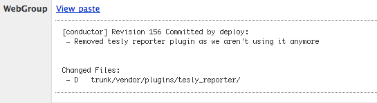
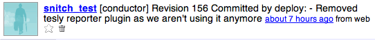

Snitch is an subversion post-commit service integration helper. I just made that up. Subversion has a post-commit hook which is executed each time you commit a change to a repository. Snitch makes it really easy to hook into the post-commit and send the commit message along with the files changed to various services on the web.
Currently, snitch works with campfire and twitter. I'll be adding in SMS, email, some day but feel free to do it yourself and send me a patch.
Screenshots
Campfire


Installation
NOTE: the twitter gem will not work with a 0.5+ version of hpricot at this time due to a xml parsing bug
- sudo gem install hpricot --source http://code.whytheluckystiff.net -v 0.4.86
- sudo gem install twitter tinder snitch
-
Create a configuration file (default is /home/deploy/.snitch) that looks like the following (be sure to fill in all the values). Be sure that none of the tabs from below get stay in the config file. It gets parse by yaml so formatting is important.
# what is the location of svnlook # you can find this on *nix boxes by typing: which svnlook svnlook: /usr/bin/svnlook # what services would you like to send commit messages to? services: :campfire: :subdomain: :login: :password: :room: Development :twitter: :login: :password: -
Create or edit the post-commit file inside your repository to look like the following. Be sure to edit the CONFIG_FILE variable to wherever you created your config file in step 3.
#!/bin/sh REPOS="$1" REV="$2" CONFIG_FILE="/home/deploy/.snitch" snitch $REPOS $REV $CONFIG_FILE 2> /tmp/snitch